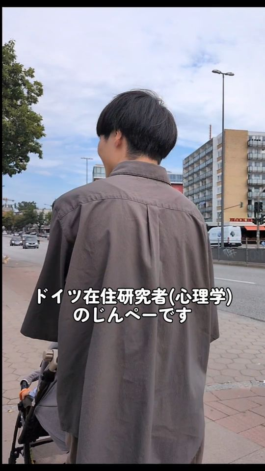
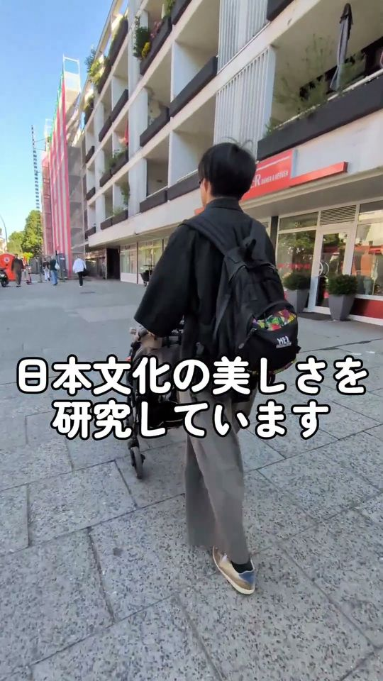
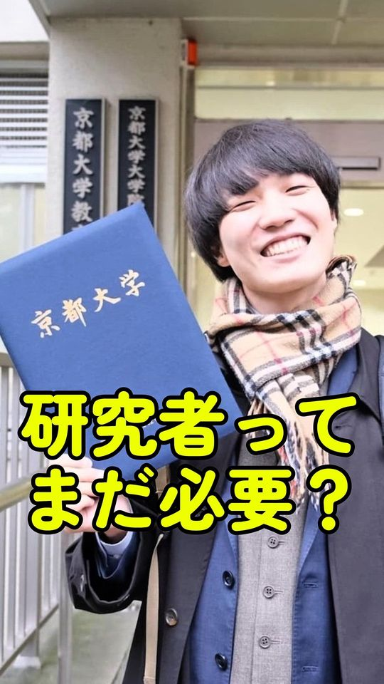

こんにちは。ドイツで心理学者をしている櫃割仁平です。具体的な研究関心や内容については後に譲るとして，ここではもう少しアイデンティティ的側面（大事にしていることや研究動機など）を簡単にお伝えできればと思っています。特に，最近は「曖昧なままそよぐ」というキャッチコピー的なものが気に入っていて，この言葉が意味するところについても一言書かせて頂きたいです。
小さい頃から色々な物事に感動してきて，その感動体験が自分の人生観を形成してきました。それが多くの人にも当てはまることであったら，感動体験や美を感じる体験に大きな力が秘められているのではないかと考え，研究の世界に足を踏み入れました。研究の時間も好きですが，美しいものを堪能する時間も大切にしていて，絶景を見に行ったり，週末は美術館に行ったり，コンサートに行ったりしています。
私の研究キーワードの1つは「曖昧さ」です。俳句は極小のスタイルを持つために曖昧であり，その曖昧さが普段使うテキストとの大きな違いであり，芸術の魅力だと考えています。また，曖昧さに対する人それぞれの考え方，感じ方の違いも「曖昧性への態度」として検討しています。なぜこんなにも曖昧なものを探求しているのかといえば，この世のほとんどのものが曖昧だなあと思うし，そんな曖昧なもの，状態が好きだからです。そして，曖昧なものに対して無理にすっきりした収まりどころを与えるよりも，曖昧を曖昧なままで味わっていくことがこれから生きていくうえで大切だとも思います。
そして，「そよぐ」というのもポイントで，無理に力を入れたり，加えたりしないで，風に任せるというのも大切です。そんな考え方を柳のモチーフに映し出します。柳に，理想の研究，生き方を見出しています。
（そよぐは漢字で「戦ぐ」と書くんですよね。そんなギャップも好きです，自分は戦いタイプじゃないですが…）
Hello. My name is Jimpei Hitsuwari, a Japanese psychologist currently living in Hamburg, Germany. Leaving my specific research interests for later, I would like to tell you a little about who I am: what I value and what motivates my research. In particular, I have recently become fond of the catchphrase “sway with ambiguity,” and I would like to write a few words about what it means.
I have been emotionally moved by various things since I was a child, and these experiences have shaped my view of life. If this is also true for many people, I thought, there might be great power hidden in the experience of being moved and of beauty. That is how I entered the world of research. I like the time I spend on research, but I also value the time to enjoy beautiful things: I travel to see spectacular views, and on weekends I visit museums and go to concerts.
One of my research keywords is “ambiguity.” Haiku is ambiguous because of its minimal style, and I consider this ambiguity to be a major difference from everyday texts and an attraction of the art form. I also examine individual differences in how people think about and feel ambiguity, under the concept of “attitudes toward ambiguity.” Why do I explore ambiguity so much? Because I think almost everything in this world is ambiguous, and I like such ambiguous things and situations. Rather than forcing something ambiguous into a clear place, I think it is important for our lives to savor ambiguity as it is.
Another important point is “sway.” It is essential to let the wind blow, without forcing or applying effort. This way of thinking is reflected in the willow motif. In willow trees, I find my ideal style of research and way of life.
SHORTS
ショート動画研究のことや，ドイツでの暮らしのことを，短い動画で届けています。 Short videos about my research and life in Germany (in Japanese).
-

#01
ドイツ在住研究者のある1日
-

#02
なんでも白黒付けようとするのやめませんか？
-

#03
AIに何でも聞ける時代に、研究者はまだ必要か？
動画は再生ボタンを押したときに YouTube から読み込まれます。Videos load from YouTube only when you press play.
YOUTUBE2024年9月より，「研究者」という枠にとらわれず，心理学に興味がある人ならだれでも参加できる心理学研究コミュニティ「あいまいと」を立ち上げ，運営しています。ぜひ，お気軽にお立ち寄りください。
Since September 2024, I have been organizing “Aimaito,” a psychology research community open to anyone interested in psychology, not only researchers. Please feel free to drop by.